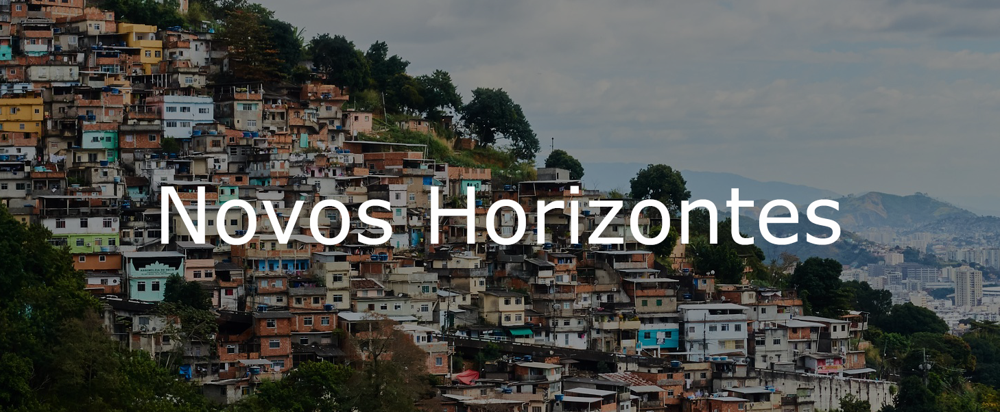

Em meio às encostas das montanhas, foi criada a ideia de um projeto comunitário chamado "Novos Horizontes". Esta iniciativa visionária foi concebida com o propósito de trazer uma transformação duradoura para comunidades carentes em três localidades distintas, cada uma enfrentando suas próprias lutas e desafios únicos.
Visão e Impacto
A visão do projeto "Novos Horizontes" vai além da superfície das ações imediatas. Este projeto comunitário é impulsionado por uma visão ambiciosa e inspiradora de criar um ciclo contínuo de desenvolvimento e progresso, levando a uma transformação duradoura nas vidas das pessoas e nas comunidades que servimos.
A visão do projeto é capacitar os membros das comunidades para que se tornem auto-suficientes. Isso não se trata apenas de fornecer ajuda temporária, mas de oferecer treinamento e educação que habilite as pessoas a cultivarem suas próprias oportunidades. Capacitando indivíduos a adquirir habilidades valiosas, o projeto visa criar empreendedores, educadores e líderes comunitários, capacitados para moldar seu próprio destino.
Além de melhorar a qualidade de vida individual, o projeto "Novos Horizontes" visa fortalecer os laços sociais e comunitários. Ao criar redes de apoio e solidariedade, as pessoas se sentem parte de algo maior do que elas mesmas. A confiança e o apoio mútuo que surgem dessas conexões são essenciais para o crescimento sustentável da comunidade.
Além de medidas tangíveis, o projeto busca criar uma atmosfera de inspiração e esperança. Ao testemunhar transformações reais e observar o impacto positivo em suas vidas e em suas vizinhanças, as pessoas encontram motivação para sonhar mais alto e acreditar em um futuro melhor. Esta esperança é contagiosa e serve como alicerce para o crescimento contínuo.
Ao investir na educação, o projeto visa impactar não apenas o presente, mas também o futuro das gerações vindouras. Proporcionar um ambiente educacional sólido para as crianças cria um ciclo positivo, onde o conhecimento é valorizado e transmitido adiante. Isso não só transforma a vida das crianças, mas também molda o futuro da comunidade, promovendo a prosperidade a longo prazo.
Em resumo, o projeto "Novos Horizontes" vai além da mitigação de problemas imediatos. Ele se esforça para criar um legado de mudança, crescimento e fortalecimento, permitindo que as comunidades não apenas sobrevivam, mas prosperem. Ao empoderar indivíduos e comunidades inteiras, este projeto busca criar um impacto sustentável e duradouro, lançando sementes para um futuro mais promissor e resiliente.
Comunidades Afetadas Pelo Projeto
Comunidade Cai Cai
A Comunidade Cai Cai, situada no Estado de Espírito Santo, é uma comunidade onde as oportunidades são escassas. Aqui, o projeto "Novos Horizontes" se concentra em melhorar o acesso à educação. Escolas locais receberão apoio para oferecer aulas de reforço, acesso a bibliotecas bem equipadas e orientação vocacional. Além disso, programas de treinamento profissional serão introduzidos para aumentar as habilidades empregáveis dos jovens, criando assim uma base sólida para o seu futuro.
Vila Renascimento
Na Vila Solidariedade, localizada no Estado de Serraville, o foco do projeto "Novos Horizontes" é a segurança alimentar e a sustentabilidade. Agricultura urbana será promovida, com a criação de hortas comunitárias e programas de treinamento agrícola. Ademais, serão distribuídas cestas básicas e realizadas sessões educativas sobre nutrição e técnicas de cultivo sustentável, garantindo assim que cada residente tenha uma refeição saudável na mesa.
Vila Beija-flor
No Núcleo Renascimento, localizado no Estado de Aurora, o projeto "Novos Horizontes" concentrará seus esforços na saúde e no bem-estar. Clínicas de saúde móveis oferecerão atendimento médico gratuito, incluindo consultas regulares, vacinações e conscientização sobre saúde preventiva. Além disso, serão estabelecidos grupos de apoio emocional para enfrentar desafios de saúde mental e promover uma comunidade mais resiliente.